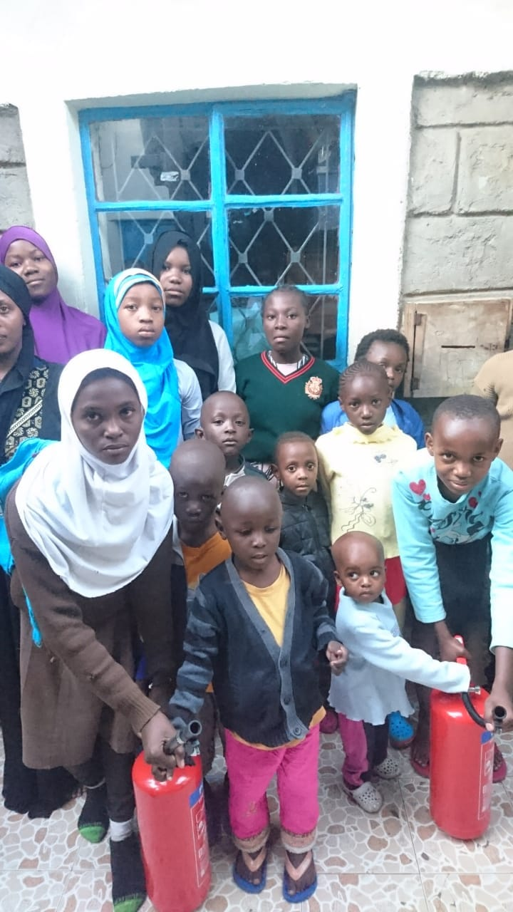

About Us
Villa Teag Children's Home is a non-profit organization dedicated to providing a safe and loving home for children in need. Our mission is to ensure that every child who comes through our doors has access to quality care, education, and support.
Our History
Villa Teag Children's Home was founded in 2003 with the goal of providing a safe and loving home for children in need. Since then, we have grown to become one of the leading children's homes in the region, providing care and support to hundreds of children over the years.Our staff and volunteers work tirelessly to ensure that each child in our care receives the love and support they need to thrive.
Our Philosophy
At Villa Teag Children's Home, we believe that every child deserves the opportunity to grow up in a safe, nurturing, and loving environment. We strive to provide our children with the best possible care and support, so that they can thrive and reach their full potential. We believe in treating our children with kindness, respect and compassion, and we work hard to ensure that they receive the love and attention they deserve.
Our Team
Our team is made up of dedicated and experienced professionals who are passionate about helping children in need. We have social workers, teachers, nurses, counselors and other professionals who work together to provide the best possible care and support to our children.
